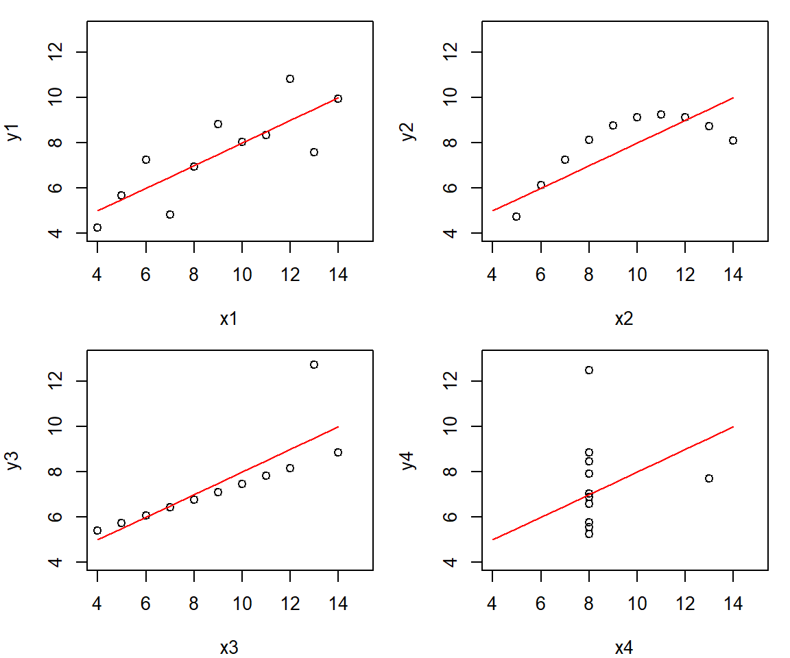

Kapitel 8 Figurer
En figur kan vara ett diagram, ett foto, en skiss eller en karta. Syftet är att ge en överskådlig beskrivning av data, eventuellt med avsikt att generalisera till en population. Välgjorda figurer tillgängliggör rapporter, bildspel eller artiklar för läsare. En god figur kan ge den som analyserar data möjlighet att betrakta data på ett sätt som annars inte är möjligt.
R ger tillgång till omfattande möjligheter för datavisualisering och en anledning till utvecklingen av R var behovet av ett verktyg för avancerad visualisering. Dels ger basutbudet i R stora möjligheter, dels finns det paket (exempelvis ggplot2 och lattice) som ger ytterligare möjligheter. Det bör nämnas att man ofta får prova sig fram när man skapar figurer i R och nybörjaren bör därför inte misströsta. Övning ger färdighet. Det kan vara bra att veta att figurer kan ta lång tid att skapa.
När man ska skapa en figur bör man fundera på om figuren
- är avsedd att presenteras externt, t ex figurer i en rapport eller bildspel. En sådan figur ska på ett tydligt och korrekt redovisa det väsentliga i en analys och vara estetiskt fullgod. Dessutom måste figuren vara sparad i ett format som fungerar för det medium den ska publiceras i.
- är avsedd för en intern analys, t ex för dataanalytikern och andra involverade i analysen. Målet kan vara att studera data explorativt vid tvätt av data, kontroll av förutsättningar vid analyser eller förmedla preliminära resultat. Estetiska och pedagogiska aspekter hos sådana figurer är inte av någon större vikt. Däremot måste naturligtvis figurerna på ett korrekt sätt representera data.
Eftersom figurer representerar data så är ofta tabeller och figurer utbytbara informationsmässigt. Om så är fallet måste den som analyserar data ta ställning till att redovisa antingen tabellen eller figuren. Men det kan också vara så att det endast är med hjälp av en figur som data kan beskrivas på tillfredställande sätt.
8.1 Estetik
Vi kan (krasst sett) klassificera figurer i fyra kategorier:
- Ok.
- Oestetisk, men korrekt.
- Dålig, innebär att figuren är svårtolkad men principellt korrekt.
- Felaktig.
Var och en av kategorierna illustreras med ett diagram i nedanstående figur.
Den första figuren är OK eftersom den redovisar stapeldiagramen utan felaktigheter. Den andra figuren är oestetisk beträffande färgval och har hjälplinjer som löper över staplarna istället för bakom. Figuren som klassas som dålig är korrekt, men det är svårt att urskilja detaljer i den. Dessutom är namnen på kategorierna otydliga och kan förväxlas med poäng. Den felaktiga figuren visar staplarna, men det finns ingen information som gör figuren möjlig att tolka.
Notera att distinktionen oestetisk-dålig-felaktig är flytande. Att ha olika färger på staplar innebär att läsaren kan föranledas att tro att färgerna tillför ytterligare information som egentligen inte finns. En korrekt figur som är dålig, kanske är så dålig att den kan misstolkas vilket innebär att den egentligen är felaktig.
Forskare och andra som regelbundet arbetar med vetenskapliga rapporter brukar ofta ha en ganska bra uppfattning om vad som är en korrekt figur. Däremot saknas en känsla för estetiken i en figur. Å andra sidan är det inte ovanligt att se grafiker som skapar vackra figurer, men som inte på ett tillfredställande korrekt sätt redovisar data.
8.2 Grundläggande figurhantering
Det finns en uppsättning figurer som ofta används. Vi kommer gå igenom de vanligaste figurtyperna som räcker för de absolut flesta situationerna. Utöver dessa finns till exempel figurer som visar 3-dimensionella samband, kartor och specialdiagram. Innan vi presenterar några vanliga typer av figurer ska vi gå igenom ett några grundläggande funktioner som en användare ska känna till när man konstruerar figurer.
För det första bygger R på att man med hjälp av en figur-funktion, t ex plot(), skapar en canvas/målarduk. Det går sedan att med olika argument i flera steg måla på denna målarduk. Vi illusterar detta sätt att arbeta med figurer genom att först med funktionen plot() skapa en figur. Sedan används funktionen lines() för rita en regressionslinje i figuren.
# Läs in data för figurer
x1 <- c(10, 8, 13, 9, 11, 14, 6, 4, 12, 7, 5)
x2 <- c(10, 8, 13, 9, 11, 14, 6, 4, 12, 7, 5)
x3 <- c(10, 8, 13, 9, 11, 14, 6, 4, 12, 7, 5)
x4 <- c(8, 8, 13, 8, 8, 8, 8, 8, 8, 8, 8)
y1 <- c(8.04, 6.95, 7.58, 8.81, 8.33, 9.96, 7.24, 4.26, 10.84, 4.82, 5.68)
y2 <- c(9.14, 8.14, 8.74, 8.77, 9.26, 8.10, 6.13, 3.10, 9.13, 7.26, 4.74)
y3 <- c(7.46, 6.77, 12.74, 7.11, 7.81, 8.84, 6.08, 5.39, 8.15, 6.42, 5.73)
y4 <- c(6.58, 5.76, 7.71, 8.84, 8.47, 7.04, 5.25, 12.50, 5.56, 7.91, 6.89)
# Regressionlinje
x <- 4:14
Ey <- 3.00 + 0.500*x
# Skapa en figur för x1 och y1. Ritar sedan en regressionslinje med lines()
plot(x1, y1)
lines(x, Ey)
För det andra omges målarduken av en ram, så kallade marginaler. Genom att använda funktionen par(mar = c(5.1, 4.1, 4.1, 2.1)), värdena är default-inställningen på marginalernas storlek, kan vi enkelt ändra marginalernas storlek. Figuren nedan illusterar målarduken i mitten med marginalerna omkring. Ordningen på värdena korresponderar till respektive marginals position. Det finns en nedre marginal (1), en vänstermarginal (2), en övre marginal (3) och en högermarginal (4).

Genom att ändra värdena ser vi att marginalernas storlek ändras. Det är mycket vanligt att justera marginalernas storlek eftersom onödiga vita ytor inte är önsvärda i en figur. Det kan också vara så att marginalers storlek måste utökas på grund att delar i figuren, t ex kategori- och/eller variabelnamn, annars inte får plats. Ett sådant exempel återges i Kapitel 5, närmare bestämt i avsnittet om Likert-figurer.
För det tredje är det vanligt att kombinera flera diagram i en figur. Detta är möjligt med funktionen par(), fast nu med argumentet mfrow = c(antalrader, antalkolumner). Argumentet består av en vektor med två värden, et som anger antalet rader och ett som anger antalet kolumner som önskas i figuren.
Exemplet nedan visar hur fyra diagram över samband kan illustereras i en och samma figur. De fyra datamaterialen kallas för Anscombes kvartett (Anscombe, 1973), och är grund för en berömd illustration av hur viktig datavisualisering är. Alla fyra datamaterial har nämligen samma medelvärde, standardavvikelse, korrelation och regressionlinje. Men en grafisk jämförelse visar hur olika egenskaper de olika datamaterialen har!
# Skapa fyra diagram i en figur, 2 rader och 2 kolumner. Fyller på med lines i varje diagram.
par(mfrow = c(2, 2))
plot(x1, y1, xlim = c(4,15), ylim = c(4,13))
lines(x, Ey, col = "red")
plot(x2, y2, xlim = c(4,15), ylim = c(4,13))
lines(x, Ey, col = "red")
plot(x3, y3, xlim = c(4,15), ylim = c(4,13))
lines(x, Ey, col = "red")
plot(x4, y4, xlim = c(4,15), ylim = c(4,13))
lines(x, Ey, col = "red")
Vi är dock inte helt nöjda med ovanstående figur, utan vi tycker det finns för mycket vit yta mellan diagrammen. Vi kombineras de bägge argumenten i par() med målet att ha fyra diagram i en figur, men med mindre marginaler. Nu ser det bättre ut!
# Skapa fyra diagram i en figur. Fyller på med en linje med lines()
par(mfrow = c(2, 2), mar = c(4, 4, 1, 1))
plot(x1, y1, xlim = c(4,15), ylim = c(4,13))
lines(x, Ey, col = "red")
plot(x2, y2, xlim = c(4,15), ylim = c(4,13))
lines(x, Ey, col = "red")
plot(x3, y3, xlim = c(4,15), ylim = c(4,13))
lines(x, Ey, col = "red")
plot(x4, y4, xlim = c(4,15), ylim = c(4,13))
lines(x, Ey, col = "red")
8.3 Färger och figurer
Som visats i tidigare kapitel kan färger användas för att lägga till extra information i figurer. Det är dock sällan önskvärt att använda olika färger om de inte tillför någon information som inte redan finns i diagrammet. I ett stapeldiagram som illustrerar antalet respondenter som hör till en viss åldersgrupp, till exempel, finns det ingen poäng i att ha olikfärgade staplar, då färskillnaderna kan vara förvirrande för läsaren. Eftersom varje ålderskategori redan har sin egen stapel finns ingen anledning att ytterligare skilja dem åt med hjälp av olika färger.
Generellt sett rekommenderas följande
- Om färgen representerar olika kategorier som inte går att rangordna bör det vara olika färger
- Om färgen regresenterar en kvantitativ variabel kan man ha olika nyanser på samma färger för att visa magnituden på variabeln.
8.3.1 Presentation av aggregerade data
Aggregerade data (summor, antal, medelvärden, andelar) presenteras ofta i
- stapeldiagram, där R använder funktionen
barplot(). - punktdiagram, där R använder funktionen
dotchart().
I princip kan samma information redovisas i en tabell men en grafisk presentation kan vara att föredra, detta är lite olika från person till person. På grund av relationen mellan stapeldiagram och tabeller används i R ofta skapat tabellobjekt, men det går också att använda enskilda variabler från en data frame. Vad som dock är viktigt när man skapar figurer i R är att användaren först måste skapa data i ett format som kan analyseras, sedan skapa figuren.
Vi ska nu skapa en figur för filmers intäkter 2019. Jämför de olika figurerna nedan och fundera på varför den ena är bättre än den andra.
boxoffice2019 <- data.frame(title = c("Aladdin", "Avengers: Endgame", "Captain Marvel", "Frozen II", "IT Chapter Two", "Joker", "Spider-Man: Far from Home", "Star Wars: Episode IX", "The Lion King", "Toy Story 4"),
amount = c(355772511, 858373000, 426829839, 430144682, 211593228,333772511,390532085, 390706234,543638043,434038008))
barplot(boxoffice2019$amount,
names.arg=boxoffice2019$title)
barplot(boxoffice2019$amount,
names.arg=boxoffice2019$title,
las=2)
par(mar = c(4, 12, 1, 2))
barplot(boxoffice2019$amount,
names.arg=boxoffice2019$title,
horiz = TRUE,
las=1)
par(mfrow = c(1, 1))
boxoffice2019_decreasing <- boxoffice2019[order(boxoffice2019[,2], decreasing=FALSE), ]
par(mar = c(4, 12, 4, 2))
barplot(boxoffice2019_decreasing$amount/1000000,
names.arg=boxoffice2019_decreasing$title,
horiz = TRUE,
las=1,
xlab = "Miljoner USD",
col = "lightblue",
border ="white")
När man har mångra kategorier lämpar sig dotcharts bättre. Vi ska se ett exempel på detta. I paketet dslabs finns datasetet gapminder. Vi läser in detta dataset för att jämföra europeiska länders förväntade livslängd. Vi ser också här ett exempel på när olika färger kan tillföra information gällande kategoritillhörighet.
library("dslabs")
gapminderEurope2015 <- gapminder[(gapminder$continent == "Europe" & gapminder$year == 2015), ]
gapminderEurope2015$color <- factor(gapminderEurope2015$region)
levels(gapminderEurope2015$color)[levels(gapminderEurope2015$color) == "Eastern Europe"] <- "coral2"
levels(gapminderEurope2015$color)[levels(gapminderEurope2015$color) == "Western Europe"] <- "palegreen2"
levels(gapminderEurope2015$color)[levels(gapminderEurope2015$color) == "Southern Europe"] <- "tan2"
levels(gapminderEurope2015$color)[levels(gapminderEurope2015$color) == "Northern Europe"] <- "deepskyblue2"
gapminderEurope2015decreasing <- gapminderEurope2015[order(gapminderEurope2015$life_expectancy),]
par(mar = c(4, 12, 1, 2))
barplot(gapminderEurope2015decreasing$life_expectancy,
names.arg = gapminderEurope2015decreasing$country,
horiz = TRUE,
las = 2,
xlim = c(0, 90),
xlab = "Life expectancy (years)",
col = as.character(gapminderEurope2015$color),
border ="white")
par(mfrow = c(1,2))
dotchart(gapminderEurope2015$life_expectancy,
labels= gapminderEurope2015$country,
las = 2,
cex = 0.8,
xlim = c(0, 90),
xlab = "Life expectancy (years)")
dotchart(gapminderEurope2015decreasing$life_expectancy,
labels= gapminderEurope2015decreasing$country,
las = 2,
cex = 0.8,
xlim = c(0, 90),
xlab = "Life expectancy (years)")dotchart(gapminderEurope2015decreasing$life_expectancy,
labels= gapminderEurope2015decreasing$country,
las = 2,
cex = 0.8,
xlab = "Life expectancy (years)",col = as.character(gapminderEurope2015$color))8.5 Figurer för fördelningar
Histogram används för att visualisera en kontinuerlig variabel. Funktionen hist() skapar ett histogram. Nackdelen med histogram är att den är känslig för antalet klasser. Testa därför olika antal klasser.
par(mfrow = c(2,2))
hist(df$gripstrength, xlab="Greppstyrka (Newton)", ylab="Antal", breaks=7, main="7 klasser")
hist(df$gripstrength, xlab="Greppstyrka (Newton)", ylab="Antal", breaks=14, main="14 klasser")
hist(df$gripstrength, xlab="Greppstyrka (Newton)", ylab="Antal", breaks=28, main="28 klasser")
hist(df$gripstrength, xlab="Greppstyrka (Newton)", ylab="Antal", breaks=56, main="56 klasser")8.6 Lådagram
Lådagram används främst när vi ska jämföra fördelningar uppdelat på kategorier. Att använda lådagram för en enda variabel är inte optimalt, utan histogram ger då mer information.
Vi vill studera testresultat uppdelat på psykologisk bedämning
boxplot(df$gripstrength~df$psych, xlab="Psykologisk bedömning (1-9)", ylab="Greppstyrka (Newton)")8.7 Spridningsdiagram
Den vanligaste funktionen i R för att skapa figurer är plot(). Det finns många argument och i det närmaste obegränsade möjligher att anpassa figurerna.
Nedan visar vi ett problem som kan uppkomma med spridningsdiagram, nämligen när vi har väldigt många datapunkter. Det första diagrammet redovisar de 500 första individerna i INSARK. Det andra diagrammet redovisar data från alla 709869 individer.
plot(df$legstrength[1:500], df$armstrength[1:500], xlab = "Benstyrka (Newton)", ylab = "Armstyrka (Newton)")
plot(df$legstrength, df$armstrength, xlab = "Benstyrka (Newton)", ylab = "Armstyrka (Newton)")Det blir, i det senare diagrammet, svårt att urskilja mönster eller trender i diagrammet, eftersom punkterna är så många. Denna problematik kommer lyftas fram mer under senare delar av kursen.
8.8 Exportera figurer
Det finns ett antal olika format att exportera figurer till. Det absolut enklaste är använda Export i fliken Plots. Här väljer du antingen Save as image… eller Save as PDF…
- PDF är ett bra format om man ska skriva ut. Det är vektorbaserat vilket innebär att det går bra att zooma in i bilden utan att upplösningen blir dålig. Figuren tar inte mycket minne.
- Formatet png är bitmap-baserat format som är utmärkt för webben. Ofta krävs, tyvärr, också png för ordbehandlingsprogram, vilket gör export av figurer med hög kvalitet krångligare, jämfört med PDF. Använd aldrig jpg, som är alternativet.
Det finns dock ganska få inställningar i Export. Ett alternativ som ger mer flexibilitet är att skapa en PDF eller png från R och sen rita figuren på denna. Vi tittar på två exempel nedan, först ett för PDF och sedan ett för png.
# Skapa en PDF att rita. Storleken anges med width och height och dimensionen är tum.
pdf("data/rplot.pdf", width = 8, height = 6)
# Börja rita figuren på filen
par(mfrow = c(2, 2), mar = c(4, 4, 1, 1))
plot(x1, y1, xlim = c(4,15), ylim = c(4,13))
lines(x, Ey, col = "red")
plot(x2, y2, xlim = c(4,15), ylim = c(4,13))
lines(x, Ey, col = "red")
plot(x3, y3, xlim = c(4,15), ylim = c(4,13))
lines(x, Ey, col = "red")
plot(x4, y4, xlim = c(4,15), ylim = c(4,13))
lines(x, Ey, col = "red")
# Stänger plot och sparar. Den sparas enligt sökvägen ovan.
dev.off()# Skapar en png att rita på. Storleken anges med width och height och dimensionen är cm (units).
# Upplösningen (dpi) är viktig för en bitmap-baserad fil. Förslagsvis används res = 1200 för utskrift och res = 72 webben eller skärmen. type = "cairo" anger att kantutjämning (antialias) ska användas, vilket ger snyggare utseende.
png("data/rplot.png", width = 18, height = 14, units = "cm", res = 1200, type='cairo')
par(mfrow = c(2, 2), mar = c(4, 4, 1, 1))
plot(x1, y1, xlim = c(4,15), ylim = c(4,13))
lines(x, Ey, col = "red")
plot(x2, y2, xlim = c(4,15), ylim = c(4,13))
lines(x, Ey, col = "red")
plot(x3, y3, xlim = c(4,15), ylim = c(4,13))
lines(x, Ey, col = "red")
plot(x4, y4, xlim = c(4,15), ylim = c(4,13))
lines(x, Ey, col = "red")
dev.off()Avslutningsvis några tips:
- Bestäm bredd-höjd-relationen (aspect ratio) redan när du skapar figuren i R. Stretcha inte figuren efter att du skapat den! Kvaliteten kan försämras betydligt. Du kan dock eventuellt förminska och förstora figuren, så länge bredd-höjd-relationen bibehålls.
- Om det finns mycket vit yta, minska marginalerna med argumentet
maripar()funktionen. - Om du skapar en stor figur, då måste du med t ex
cex-argument i figuren, för att öka storleken på text. Ofta måste man prova sig fram. Var beredd på att ändra storlek på text och siffror i figuren.